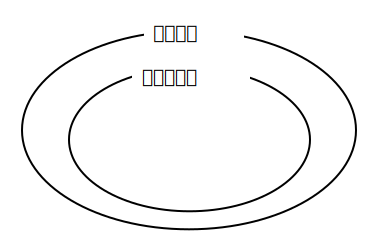

ノルム空間 \(\mathscr X\) の任意の2要素 \(x, y\) に対して
は \(\mathscr X\) 上の距離関数となる。即ち,
\[ \begin{align} &||x-y||\geq 0\\ &||x-y||=||y-x||\\ &||x-y||\leq ||x-z||+||z-y|| (\forall x\in\mathscr X) \end{align} \]
(Q.E.D.)
\(x-y+(y-x)=(x-x)+(y-y)=0+0=0\)
\(\therefore y-x=-(x-y)\)
任意のベクトル \(v\) に対して \(u=v-z\) を考える。(\(z\) も任意のベクトル)
\(\underline{u+z}+0･z＝u+(1+0)･z＝\underline{u+z}\)
\(u+z=v\) なので \(v+0･z＝v\)
\(\therefore 0･z=0\)
\(z+(-1)･z=(1-1)･z=0･z=0\)
\(\therefore (-1)･z=-z\)
\(x-y=x-y+0=x-y+(z-z)=(x-z)+(z-y)\)
ノルム空間と距離空間の関係は以下の様になる。

(蛇足終わり)